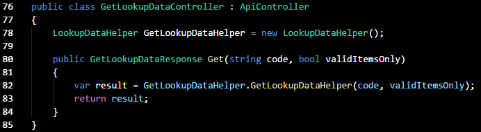
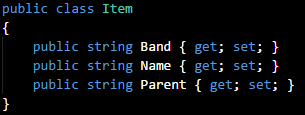
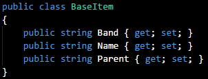
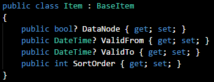
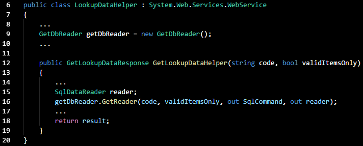
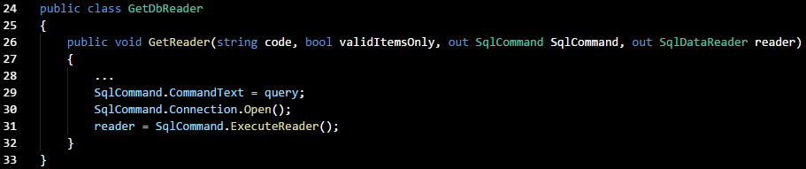
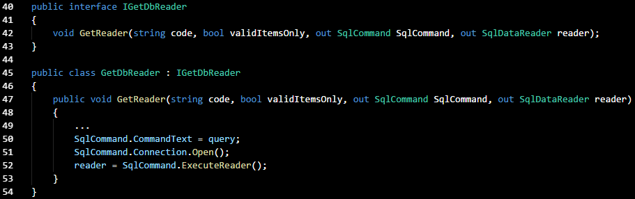
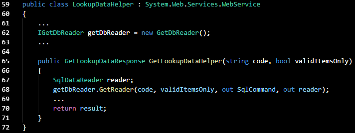

Class, Method, Variable and Property Naming
As anyone who's tried to analyse the output of a decompiler would attest, the descriptive naming of objects within code makes a huge difference to its readability. This principle should be applied to classes, methods, variables and other objects, so the names are descriptive of their purpose and function. This will become important as we refactor our code.
Minimal-Responsibility Methods
This is conventionally referred to as the 'Single Responsibility Principle', and states that a method or function should do one thing only, and have a single responsibility. Structuring code this way should make testing each unit in isolation easier (when loose-coupling is applied), and it should be easier to extend/modify units without inadvertently affecting the general behaviour of the program. However, I'm calling it the 'minimal-responsibility principle' here, as I find it's not always possible or productive to refactor methods/classes to multiple single-function units.
In an existing project, I'm looking at methods for distinct units of operation that could be extracted out. There is a 'Quick Actions and Refactorings...' feature in Visual Studio that can do this for us.
Open/Closed Principle - Maker of Things Visible and Invisible
This SOLID principle states that a unit should be closed to modification, but open for extension. The idea behind this principle is that developers should extend existing units of code, instead of modifying them, when adding features instead of modifying them.
A good reason for this is the assumption that a working iteration of a program is dependent on code that already exists, and therefore modifications come with a higher risk of introducing defects. Secondly, the practice of extending existing methods or classes helps us to avoid the duplication of code.
What does this mean in practice, though? Any class that could be re-used should be instantiated as a base class for something that extends it. Visual Studio already does this by default with commonly-implemented features, such as MVC controllers. Let's look at a WebAPI controller that I've refactored:

As we can see, GetLookupDataController is a class that's derived from ApiController, and everything visible here is really an extension of that base class. Whenever we want to add a new WebAPI controller to a project, we declare the same ApiController as a base class instead of duplicating it under a different name.
I can provide an even simpler illustration: In my project I have a data object called 'Item', which has three properties:

What if I anticipated a feature request that involves a similar object with several more properties? In that case, I'd rename the 'Item' class as 'BaseItem':

I'd add another class containing the additional properties that extend BaseItem:

When executed, the software would construct a data structure containing all properties from the base and derived classes.
Liskov Substitution Principle
This principle essentially seems an extension of the previous one. A derived class should implement all the functionality provided by its base class, and without modifying whatever's being inherited. If the latter isn't the case, it's an indication that the base class violates the minimal responsibility principle.
In other words, a program's behaviour should remain unchanged if the reference to a base class was replaced with a duplicate of its code.
Interface Segregation
A client shouldn't be dependent on things it doesn't use. This dependency could be inadvertently created if we're setting up an interface with multiple methods.
Imagine an interface called 'IFileOperations' that contains three methods: Read(), Write() and Save(), that respectively implements three operations, read file, write to file and save. Any client calling that interface would need to either use all three methods, even if only one is needed, or throw a 'not implemented' exception.
One way to solve this would be to put each method within its own interface, IRead, IWrite and ISave. Or we could logically segregate the interfaces by mapping the names to the methods, e.g.
class FileOperations : IRead, IWrite, ISave
{ // All three methods here }
Dependency Injection
Here I'm using the constructor injection method of resolving the tight coupling between a Web API helper and a GetDbReader class. In this project, GetReader() is the method that executes SqlCommand() using parameters passed from the helper method. I started out with the following code in Helper.cs:

As we can see, GetLookupDataHelper() is dependent on an instance of GetDbReader(), which contains a method that implements the database reader function.

It is possible to use a form of dependency injection here, so the helper class and GetDbReader() aren't so tightly coupled. I added an interface called 'IGetDbReader' and declared the GetDbReader class as a member of it. After the interface is created, the helper instantiates the interface:

Getting the helper method to use the interface was easy, a simple matter of changing a line so that the interface was instantiated as 'getDbReader'.
